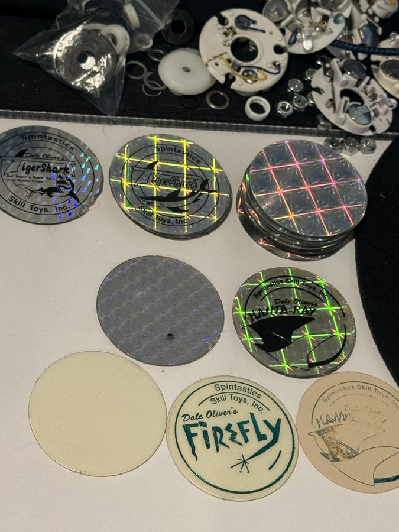
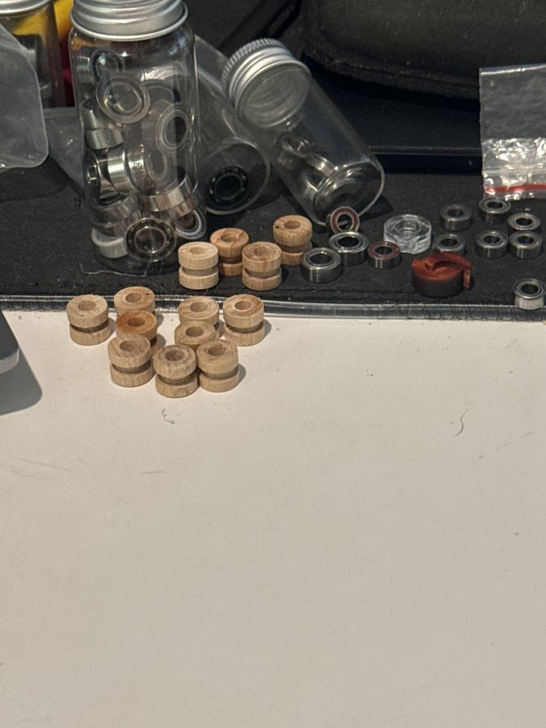

The axle holds the two halves together. Originally the yo-yo spun right on the axle inside the string loop. Transaxle sleeves and ball bearings came later to cut friction and add spin time.[111]
Axle systems, oldest to newest
System
How it works
Examples
Fixed wood axle
The string loops around a wooden axle; friction from the axle winds the string back up.[7]
Tom Kuhn’s No Jive 3-in-1, the first take-apart wooden yo-yo, uses a wooden sleeve over a threaded metal rod.[120] The SPYY eH has replaceable wooden axles.[121]
Fixed metal axle
A metal axle, often paired with a starburst for extra grip.[7]
Duncan Imperial (1954)[116]; Duncan Wheels (1979), with a coated axle for longer spins.[117]
Axle sleeve
A sleeve of aluminum, brass, or wood covers the axle. On some yo-yos you can replace it.[118][119]
The ProYo (patented 1974) had a riveted aluminum, later brass, sleeve; the ProYo Ultimate used wood.[118] The Spintastics Technic (1995) has a replaceable wooden sleeve.[119]
Transaxle
A free-spinning plastic sleeve. Spin time falls between fixed axle and bearing, and it’s cheap.[112]
Yomega Fireball (1989, as the Outrageous Yo): a Teflon sleeve that spins about three times longer than a fixed axle.[70] Duncan Trans-Axtion (1999).[115]
Ball bearing
Balls between two races spin the longest. See Bearings.[2]
Tom Kuhn SB-2 (1990), the first all-metal bearing yo-yo.[2]
Auto-return clutch
Spring-loaded, weighted arms fly out while it spins fast. As it slows, the springs pull them in to grip an O-ring on the sleeve, and the yo-yo comes back by itself.[113]
Yomega Brain (1984), the first. After its patent expired, others followed, like the Duncan Reflex.[113][114]
Adjustable response systems
Henrys Viper (1997–98): the “Quicktrick” system. Twist the halves in or out to narrow or widen the gap on the fly.[68]
YoYoFactory F.A.S.T. 201 (2003): “Fully Active Starburst Technology,” invented by Hans Van Dan Elzen. Spokes form starbursts, and twisting the halves changes the gap: narrower is more responsive, wider sleeps longer. It needed almost no maintenance but was famously noisy, so players often pulled the spokes and filled the holes with silicone.[122]
F.A.S.T. 400 series (401k, 2005): knobs on the hubs move plastic “shuttles” flush or recessed. It had 180 settings, each .001 inch apart, about a human hair. It was the first truly adjustable response, and you could mix shuttles with pads.[123] The 401 SD (2008) was one of the last in the series.[124]
Came-Yo Mondial: a port in the hub lets you add thick lube with a syringe without taking it apart.[7]
Transaxle: transaxles often have very little response. A double loop of string around the sleeve helps; so does thick lube, at the cost of spin time.[148][7]
Clutch: the clutch grips the O-ring on the sleeve. Remove the O-ring and it sleeps like a Fireball, but you’ll have to return it yourself.[113]
Starburst: soft plastic starbursts can wear away and can’t be replaced.[7]
Old-school DIY: before silicone, players cut homemade pads from brake pads.[7]
Stripped and stuck axles
It’s usually the yo-yo’s threads, not the axle. Axles are steel and most yo-yos are aluminum, so the aluminum gives first. A damaged axle (bent, or chewed up by pliers) is cheap to replace, often about $2.[196]
Avoid cross-threading: line up the halves, turn them gently counterclockwise until you feel a click, then screw them together.[197]
If one half is stripped: a longer axle can sometimes reach threads past the damage. Or glue the axle permanently into the stripped half with threadlocker or epoxy and keep using the other half to open it. A repair shop can also re-tap the threads.[196][198][1]
Stuck axle: grip it with pliers through a cloth, or lock two nuts together on the axle and turn the inner one. A hex key won’t move a tight axle.[199]
Don’t pull glued axles. One Drop glues and centers the axles in its Side Effects hubs and recommends never removing them. To tune vibe, unscrew the yo-yo and rotate the Side Effect a little instead.[200]
Plastic loopers don’t need much force. Crank the halves together and the posts can snap the plastic. Snug is enough.

Donated Spintastics broken down for the club loaner bin: caps, pogs, and light-up parts.Photo: Brandon Rogers (Captrogers), from the YoYoExpert thread Spintastic refurbishing

Wooden axle sleeves are the hard part to replace.Photo: Brandon Rogers (Captrogers), from the YoYoExpert thread Spintastic refurbishing
A well-made wooden yo-yo takes as much abuse as a lot of plastics. Ed Haponik has never seen one wear out from regular play except for the axle.[152]
String
Use cotton on a wooden axle. Polyester heats up and can melt on the axle.[149] Thick type 10 cotton is a favorite.[149][150]
Fixed axles wear through string fast, so change it often.[149]
Some players rub a tiny bit of wax lip balm on the string for grip; a little goes a long way, and more makes it grabby.[149][154]
Response and play
Warm up. Response is friction, and friction is heat, so temperature and humidity matter. A few loops and hops warm up the string and axle.[150]
The “thud”: a small thud at the end of the string is normal on many fixed axles. Adjust string tension, or try a thicker string.[150]
Break-in: a rough-feeling gap may be the response. Play loops and hops to break it in, or saw the string back and forth in the gap.[148]
Take-apart wooden yo-yos
Don’t overtighten. Cranking down can warp a wooden axle sleeve.[151]
If it keeps unscrewing, wrap the threads with Teflon tape, or swap the O-ring for a solid shim cut from card stock or clear plastic packaging.[151]
Replacement axles are the main wear part; makers like TMBR sell spares.[152]
Fixing wood
If edges get rough, a few minutes with 320-grit sandpaper smooths them. Bent wood can sometimes be bent back into shape.[152]
Some players lightly sand a rough gap with medium-grit paper on a putty knife.[148]
DIY: turn your own
One forum maker turned a playable fixed-axle yo-yo on a small hobby lathe in 30 minutes, using a hardwood body and a 5/16″ dowel axle in a tight friction fit so it could come apart. A denser white oak body with an osage orange axle played far better. A later take-apart version used a headless 8-32 screw in brass threaded inserts with a walnut axle sleeve.[153] Lathe work needs adult supervision and proper training. See Yo-Yo Science & DIY for more on making your own.
A ball bearing has an outer race, an inner race, and balls between them, usually eight, held in place by a cage. Thin shields and C-clips keep out dirt; many players remove the shields for easier cleaning.[4][2]
Inside a ball bearing: steel balls roll between an inner and an outer race.Pearson Scott Foresman, public domain, via Wikimedia CommonsA metal yo-yo apart, with the ball bearing seated in the hub.Sarah Jones, CC BY-SA 2.0, via Wikimedia Commons
History
1959 Jack Sauer puts a ball bearing in a “yo-yo doll,” the first known ball-bearing axle.
1965 Milton Isaacson puts a ball bearing in a typical yo-yo.
1984 SKF makes novelty ball-bearing yo-yos.
1990 Tom Kuhn releases the SB-2, the first all-metal ball-bearing yo-yo.
1991 Yomega releases the Raider.
1992 Tom Kuhn’s Roller Woody and Sleep Machine are the first modern wooden yo-yos with ball bearings.
1997 Playmaxx’s ProYo Turbo Bumble Bee is the first bearing yo-yo with a replaceable response system.
1999 Duncan’s first ball-bearing yo-yos, the Hardcore series.
2002 Frank Difeo’s limited Daizzy-Fly uses a grooved bearing that centers the string for low-response tricks.
2003 Dif-e-Yo introduces the KonKave centering bearing.
2005 YoYoFactory’s G5 ships with bearing-based hubstacks.
Retailer Infinite Illusions gave bearing sizes letters so players could order the right part. C and A are what you’ll meet today; the rest are older, brand-specific, or rare. Measurements are inner diameter × outer diameter × width.[2]
SuperYo Sonic Spin II and Invader; the housing makes a buzzing noise as it spins[2]
M · special order
9 × 17 × 5 mm
Not listed
YoYoJam Big Yo 2; bigger than anything else on this list[2]
MR85: the newest small size
When MK1 Yoyos and Spinworthy turned the wooden Bloodcell into the metal RBC in 2021, they skipped the usual A bearing for an MR85, because its 8 mm outer diameter matches the wooden original’s axle.[163] The similar DocPop Weekender takes a standard A bearing instead.[164] Spinworthy’s Flying Lemon later used a 4 mm wide MR85 for unresponsive play.[166]
Keeping it responsive: the races are so small that thick lube tends to smear onto the string. Players apply it with a toothpick, run it dry, or buy greased, rubber-shielded MR85s.[168]
Make it a fixie: fixed-axle fans fill MR85s with steel epoxy to make “bearing blanks,” turning an RBC into a fixed-axle yo-yo.[167]
Buying one: search “MR85” and check the width. Flat ceramic MR85s exist; concave ceramic versions are hard to find.[165]
Shapes and types
Flat: the basic stainless steel 8-ball bearing.[48]
Centering (concave): the KonKave (2003) has a curved outer race that keeps the string centered and away from the response. Others followed: YoYoFactory’s Center Trac (flat with flared edges), V-shaped designs, YoYoRecreation’s DS, grooved bearings, and the stepped CLYW × iYoYo Pixel.[2][46]
10-ball: ten balls instead of eight for a smoother, quieter spin, with a break-in period. One Drop ships them standard.[2][47]
Ceramic: silicon nitride balls in a steel race; pricier and more sensitive to shock.[2]
Sealed and lubed: One Drop’s Greasebucket is silicone-sealed and packed with lube for a consistently responsive, no-maintenance feel.[49]
Specialty bearings: non-standard but interesting
More centering shapes: Henrys’ V-shaped Trapeze (D size only), B.I.S.T.’s V-Cave, Twisted Stringz’ 10-ball Trifecta (KonKave curve plus a groove), and Born Crucial’s grooved bearings.[2]
Treated and coated: YoYoFactory’s Dorothy was meant to run dry and never be cleaned, but some players found it prone to locking up. The Gold bearing, commissioned by Takahiko “Taka” Hasegawa, got its color from a treatment that wears off. Infinite Illusions’ Mercury bearings (no actual mercury) used a factory cleaning process for longer spins; the Mercury Fat Lip widened the inner race so shims can’t touch the shields.[2]
The Phi super-bearing: Kyle Weems picked the coated, run-dry C bearing in his 2005 Kyo Phi 1.618 by spin-testing candidates on a rig.[2]
NSK: precision Japanese bearings with a curved, string-centering race that need little maintenance, though their tight tolerances can lock up.[2]
Ruby: Wolf Yoyo Works built experimental bearings with real ruby balls. They were never sold.[2]
Makers who built their own: Tom Kuhn, Custom, and Dif-e-Yo
Tom Kuhn. A San Francisco dentist and 1955 neighborhood Duncan champion, Dr. Tom Kuhn made the No Jive 3-in-1, the all-metal Silver Bullet, and in 1990 the Silver Bullet 2 (SB-2), the first metal ball-bearing yo-yo.[158][159] The SB-2 used Kuhn’s own small I-size bearing and a patented adjustable gap: screw the bearing cups in or out with a small tool.[159][2] With no response system, players double-looped the string around the axle to get it to return. In 1999 Kuhn added his patented cloth Turbo Discs.[5][159][158] An SB-2 flew aboard Space Shuttle Atlantis in 1992, and Kuhn joined the National Yo-Yo Hall of Fame in 2006.[158][159]
Custom Products. This Arizona maker used its own tiny G-size bearing until switching to A in 2008.[2] Eric Wolff converted a fixed-axle Custom Reactor to a bearing and added response strips cut from a Rubbermaid no-slip bathtub tread. That idea became Custom’s “Performance Rings,” and it drew a Brake Pad patent lawsuit from Playmaxx. After a judge ruled against Custom, the two settled and Custom redesigned the rings.[160][8]
Dif-e-Yo and Frank Difeo. Frank P. Difeo (1952–2024) trained at Haverhill Trade School in Massachusetts and spent 18 years as a tool maker at Lucent Technologies before retiring into aluminum yo-yos around 2001.[156][155] He machined on a mill instead of the usual lathe, which let him cut unusual hub shapes.[155] His 2002 Daizzy-Fly, a 55-piece serial-numbered collector run, used a grooved bearing to center the string; in 2003 he refined it into the KonKave, which comes in A, C, D, and L sizes (plus a ceramic C). Upgrading another yo-yo with his conversion kits became known as “KonKaving.”[157][2] He also made Dif Pads (2003) and Dif-Binders (2015); see Response Pads.[8][156] Frank Difeo passed away on March 3, 2024.[156]
ABEC ratings describe manufacturing tolerances, but most players find they make no difference in yo-yo play.[2] New bearings usually need breaking in with a few long sleepers.[2] Bearing removal tools make swapping easier without scratching the bearing.[58]
Clean a bearing when it gets noisy, gritty, or too responsive. New bearings are often lubricated to prevent rust, which can make them responsive until cleaned.[3]
Safety First: Adults Handle Solvents
Most cleaning solvents are highly flammable and give off fumes. Wear eye protection, work in a well-ventilated space away from flames, and have an adult handle them.[3][24]
Is it the bearing? Try this forum test: throw a sleeper, then pop the yo-yo up a few inches. If the string “chases” around the gap, the bearing isn’t fully unresponsive and a cleaning should help.[206]
Remove the bearing, then pop off the shields with a pin at the C-clip. Many players leave shields off afterward.[3]
Soak it in solvent in a glass jar, swirling or turning it with a toothpick.[3]
Blow it dry with compressed air, or spin it on a pencil as it dries, so no residue stays behind.[3]
Add a drop of lube if you want it quieter or more responsive (see below).[3]
Removing a stuck bearing
Needle-nose pliers: YoYoTricks’ G2 Jake grips the bearing with needle-nose pliers and wiggles it off. Wiggle, don’t just pull.[201]
The string trick: lay the middle of a string in the deepest part of the bearing seat, screw the yo-yo together tight, then unscrew. The bearing usually moves to the other half on the string, and you pull both ends to pop it off.[201]
Still stuck: squeeze a bearing removal tool with pliers for more leverage, or put the yo-yo in the freezer for about 30 minutes first.[203]
Prevent it: press the bearing onto its seat before you screw the yo-yo together. Letting the axle force it on can damage the seat and make the bearing seize.[202]
Which solvent?
Mineral spirits (paint thinner) and lighter fluid are common choices; many players use lighter fluid, which is gentler on plastics than acetone.[3][25]
Acetone is a strong solvent, but it can damage plastics and paint, and the YoYo Wiki warns it can promote rust.[3][25]
Avoid rubbing alcohol and water, which can rust a bearing.[3][27]
What forum players actually do: plenty clean with the purest isopropyl they can find, since the water in weaker rubbing alcohol is the rust risk. Some even use a jewelry-style ultrasonic cleaner with soap and water, then blow the bearing dry right away with canned air.[214]
Use less solvent: a shot glass or an empty baby food jar is just the right size. Swirl the bearing with a pencil, then spin it dry on the pencil.[215]
Lower-fume option: some players use citrus (orange) degreasers, as skateboarders do, though others worry about residue.[24]
Step-by-step guides with photos: YoYoExpert and How To Yo-yo.[22][23]
Lube does not clean a bearing. It keeps it quiet and protected, and it is optional.[14] A dry bearing is the least responsive but noisier, wears faster, and can rust.[3]
Thick lube makes a yo-yo more responsive, good for beginners and looping.[51][52]
Thin lube maintains an unresponsive bearing and extends its life. Use one drop.[50][52]
How much: less than you think. Many players just touch the bottle tip to the bearing, about a quarter to half a drop. A full drop of thin lube is fine too; it just plays responsive for a couple of days while it breaks in.[207]
Players once used 3-in-1 oil for a responsive yo-yo and trumpet valve oil for an unresponsive one. Dedicated yo-yo lubes followed from brands like YoYoJam.[3]
Sewing machine oil works as a thin lube; players report it performs as well as yo-yo lube.[26][27]
Skateboard bearing lube has a similar thickness to thin yo-yo lube and costs less per ounce.[27]
Trumpet valve oil comes in many thicknesses, but it can damage plastic.[27][3]
In a pinch, for more response: our guide suggests a thin smear of lip balm without water in the ingredients, or one tiny drop of light cooking oil. Use sparingly.[1]
Part 9
Response Pads and Silicone
The response system grabs the string so the yo-yo can wind back up. When pads wear out or fall out, the yo-yo slips and won’t return cleanly.[7][1]
History
Fixed axle Friction from the axle itself winds the string.
c. 1950 A Duncan employee proposes the raised starburst around the axle.
Playmaxx Reverse starbursts (grooves), then rubber Brake Pads that look like cork. Brake Pads became the basis of modern replaceable pads.
Late 1990s Friction stickers (patented in Britain in 1984) catch on with the rise of aluminum yo-yos.
YoYoJam Rubber O-rings in a groove around the axle, often shaved flush.
Silicone Flowable silicone and silicone pads take over for unresponsive play.
Timeline from the YoYo Wiki.[7][8] O-rings faded because black rings left string dirty and grew less reliable as gaps widened; silicone was more consistent.[32]
Pad sizes
19mm “Large Slim” silicone pads are the most common size today. Central Bearing Company makes them with YoYoFactory; other brands, including Duncan, make compatible 19mm pads.[8][43][45]
Standard 19mm pads are about 1–1.1mm thick; One Drop’s are thinner, about 0.7–0.8mm.[44]
Other sizes include small pads for A-size bearing yo-yos, 21mm “Large Broad,” and the older .555 size.[8][33]
Pad recesses come in four standards: small, large, .555 (named for its .555-inch inner diameter), and the silicone groove. Small pads fit A-bearing yo-yos with no lip; large pads fit A or D yo-yos with a lip, or C yo-yos without one; .555 pads fit C yo-yos with a lip.[8]
Pads through the years
Playmaxx Brake Pads (1997): thick, cork-looking rubber with teeth arranged in a starburst, first on the ProYo Turbo Bumble Bee. Duncan took them over when it bought Playmaxx, and they became the basis for every modern pad. YoYoFactory re-released them in 2023 as Retro Response Brake Pads with the Turbo Grind Machine.[8]
Tom Kuhn Turbo Discs (1999): the only pads made of cloth, with patented fibers that interact with the string. The YoYo Wiki notes that 3M Durapore medical tape works the same way.[8][158]
Duncan Friction Stickers (2001): a thin layer of rubber over black adhesive fabric, first on the original Freehand (in white rubber at first). They grip hard when new and fade as the rubber wears away. Small-bearing only, 12 mm inner diameter. Duncan also made longer-lasting Looping Stickers, Silicone Stickers, and SG Stickers for silicone grooves. Around 2017 Duncan discontinued Friction Stickers and threw out the remaining warehouse stock.[8]
Dif Pads (August 2003): Frank Difeo’s rubber-like pads, standard in every Dif-e-Yo from 2003 on and a favorite swap for making other yo-yos less responsive. They come thin (.015″) and thick (.03″); thick pads stick farther into the gap, so they are more responsive. Large and .555 sizes. In 2015 Dif-e-Yo added silicone Dif-Binders with the Gladiator Slave.[8]
Baz Pads and Chaz Pads: Bazmonkey made Baz Pads from Plasti Dip rubber coating. Charles Schluer’s Chaz Pads updated the idea in the .555 size. They went out of production, then came back briefly in 2017 in an extra-thick version for the Core Co Alleycat.[8]
Core Co Response Pads: the Alleycat was designed around Duncan Friction Stickers, but they disappeared mid-production. The first runs shipped with Chaz Pads, which weren’t as grippy, so Core Co made its own replacement.[8][161]
Kentaro, K-Pads, and CBC pads: YoYoFactory team member Kentaro Kimura made textured rubber Kentaro (“Kimu”) Pads, then silicone K-Pads. The Central Bearing Company, YoYoFactory, and Kimura later produced CBC pads in Large Slim (19 mm), Large Broad (21 mm), Small, and Mighty Flea sizes.[8]
IrPads: handmade pink silicone pads by 2007 East Japan 1A champion Ryosuke Iwasawa, made in more sizes and thicknesses than any other pad.[8]
Ghost Pads and carbon fiber: Paul Yath made clear pads from flowable silicone, plus carbon fiber stickers that some players avoided over worries they could cut string.[8]
Niche response tricks and mods
Hybrid response: YoYoJam popularized one O-ring on one side and a starburst on the other.[178]
Cut your own reverse starburst: because it’s just radial grooves, players cut them into plastic and metal yo-yos with a sharp tool; the original Henrys Viper was a common target.[178]
Worn-out starbursts: a starburst molded into soft plastic can wear away and can’t be replaced; the Team Losi Cherry Bomb was known for it.[178]
Homemade pads: before silicone took over around 2005, players cut Brake Pads down into their own friction stickers.[178]
A lube port: the Came-Yo Mondial had a hole in the axle hub so you could inject thick lube with a syringe without unscrewing it.[178]
Recessing mods: modders lathe a pocket so pads sit flush, like Takeshi Kamisato’s recessed Freehand Zero.[178]
Electrodynamic bearings: a bearing that uses eddy currents from a rotor spinning in a magnet field, with no active controller, supplied by Magnetal AB.[2]
Odd pads: non-standard but interesting
YoYoFactory’s early Redline yo-yos came with three sticker materials: pencil-eraser rubber, three-ply river-raft material, and faux belt leather.[8]
Chu Pads were thin plastic, thinner than a thin Dif Pad, for just a hint of response.[8]
Shinwoo’s 2010 pads are reversible: flat on one side, starburst on the other, so you flip them to change response.[8]
Henrys’ Gecko Pads click into place with no adhesive but fit only Henrys yo-yos.[8]
Even Bandai’s motorized Hyper Infinity had replaceable rubber pads.[8]
Replacing pads
Unscrew the yo-yo and find the response groove around the bearing seat.[1]
Clean the groove with a cotton swab to remove debris and old adhesive.[1]
Press in a new pad, sticky side down, so it sits flush.[1]
New pads feel grabby. They break in as you play. Lots of binds speed it up.[209]
Pads sticking out of the groove? Thick pads can keep a yo-yo from sleeping. Swap in thinner pads.[205]
Reusing a pad: you can pull a pad and put it back if you don’t stretch it. Park it on the backing paper from an old sticker.[210]
Old silicone: pick it out with a wooden toothpick; a broken toothpick’s flat end works like a tiny brush. A few leftover bits are fine because new flowable silicone bonds over them. Vinegar softens uncured silicone, but your yo-yo will smell like pickles.[211][212]
DIY: flowable silicone
Flowable silicone is a windshield and glass sealant sold at auto parts and hardware stores. YoYoExpert sells a Permatex tube for yo-yos.[42]
Fill the response groove with flowable silicone and smooth it out.[42]
Let it cure about 12–24 hours, longer when humid, before playing.[42][31]
Clear flowable vs. red RTV: players find clear flowable easier and less messy. Red high-temperature RTV is stickier, harder to apply, and has a strong vinegar smell.[29][30]
Less response: some players prefer Permatex Ultra Grey for a very unresponsive bind.[31]
Save the tube: push a screw into the nozzle before it dries, then pull it out next time.[29]
Other options: some players have used bathroom silicone caulk successfully.[28]
Keep Exploring
How to Yo-YoThrows, first 100 tricks, contests, glossary